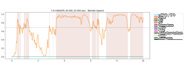
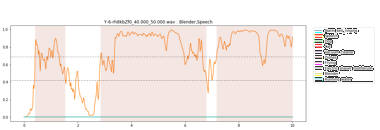

Parametrics methods¶
The parametric methods require optimization and can be either class-independent or class-dependent. Three methods are tested and describe bellow.
See also
optimization for a description of the different optimization algorithm than can be used
A segment is composed of continuous valid probabilities. In most cases, segments will have a minimum size and a minimum interval. A segment smaller than the minimum segment size will be withdrawn. If an interval in between two segments is smaller than the minimum interval size, the two segments are merged together.
Absolute¶
Absolute thresholding refers to directly applying a unique and arbitrary threshold to the temporal predictions without using their statistics. This naive approach still yields exploitable results that can get close to the best ones in some cases. It is also the approach with the shortest optimization time due to the unique parameter to optimize.
Every probability above this threshold will count as a valid part of the segment.
For the class-dependent variant of the method, each class have their own threshold.
Hysteresis¶
The hysteresis threshold is used in many fields, such as finance, imaging, electronics, etc… It is a simple method to implement and has proven itself many times over. This method is based on two thresholds. One is used to determine the beginning of a segment and the other (smaller) its end.
This algorithm is used when probabilities are unstable and changing at a high pace. It should, therefore, decrease the number of events detected by the algorithm and reduce the insertion and deletion rates, giving a better error rate than the Absolute threshold approach.
For the class-dependent variant of the method, each class have their own couple of hystersis thresholds.
